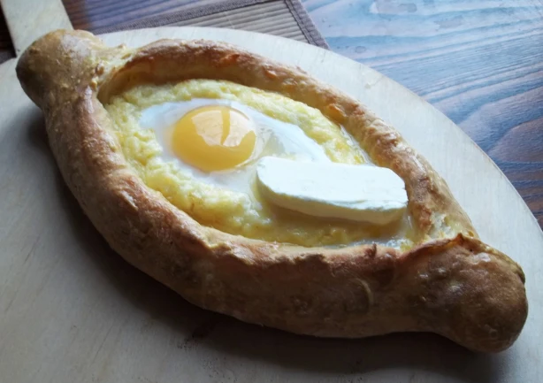

Khachapuri

Description
This savory dish is traditional of the Adjaria region of Georgia (the country). It is a boat-shaped flatbread with upturned sides to contain a sea of melted mixture of local cheeses topped with butter and an egg.
Different varieties of this cheesy baked delight exist in every region of Georgia (the country).
Ingredients
- 1kg wheat flour
- 2 cubes fresh yeast
- 200ml water
- 200ml of milk
- 50ml neutral oil
- 3 eggs
- 50g butter
- 100g Imeretian cheese
- 100g of Sulguni cheese
- Herbs, as desired
Steps
- Make a yeast dough and let rise for ca. 90 mins.
- Roll out dough into oval shape.
- Grate the cheese and mix with butter and two of the eggs.
- Spread cheese mixture over the dough, leaving about 2-3 cm around the outside uncovered
- Fold up the outside of the dough.
- Bake at 200 degrees C for about 40 mins until nicely browned.
- After removing from the oven, add a chunk of butter and an egg. Serve immediately.